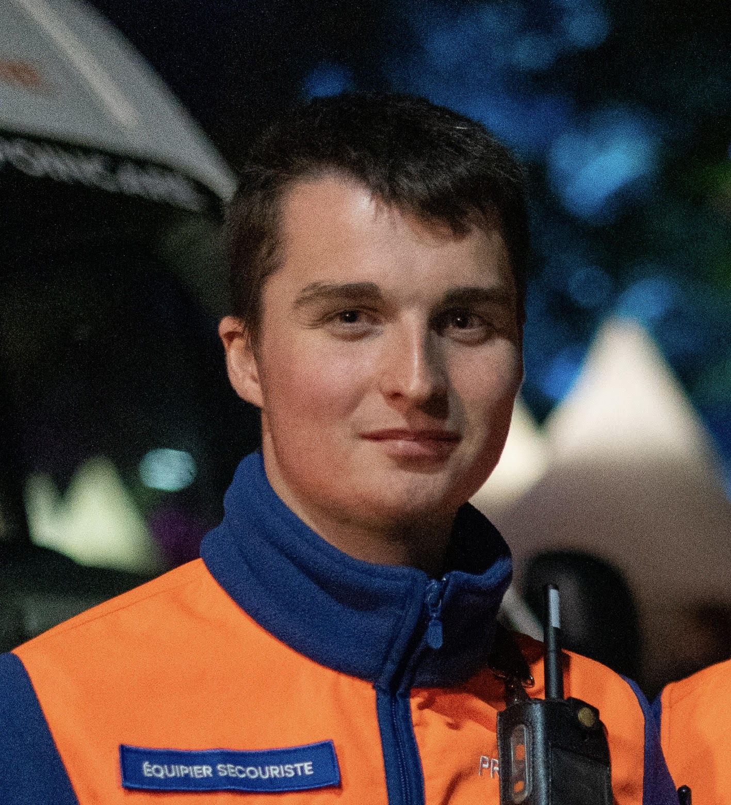

Pré-MSc Epitech. Je conçois des outils full-stack et j’opère les infrastructures : code, automatisation et services fiables sur le terrain.

Qui je suis et ce que j’apporte.
J’ai découvert l’administration systèmes et le développement pendant mon BTS SIO (SISR). Stages puis alternance m’ont permis de créer des outils qui améliorent la logistique, la communication et le support IT.
Au quotidien, je combine serveurs, réseaux et automatisation pour éviter les tâches répétitives et maintenir des services fiables pour les équipes terrain.
Je souhaite maintenant aller plus loin sur l’infrastructure, le socle sécurité et l’outillage opérationnel, toujours au plus près des besoins concrets.
Actif depuis 2023 — missions terrain avec la Protection Civile, dont l’appui aux opérations Paris 2024.
Projets mêlant systèmes, réseaux et développement pragmatique.
Application mobile · Flutter & Firebase
Modules open-source · Python & PHP
Full-stack · Next.js & Express
Lab d’automatisation · Python & APIs ML
Automatisation desktop · Python & CUPS
Intégration IoT · Raspberry Pi & capteurs
Construisons quelque chose ensemble.